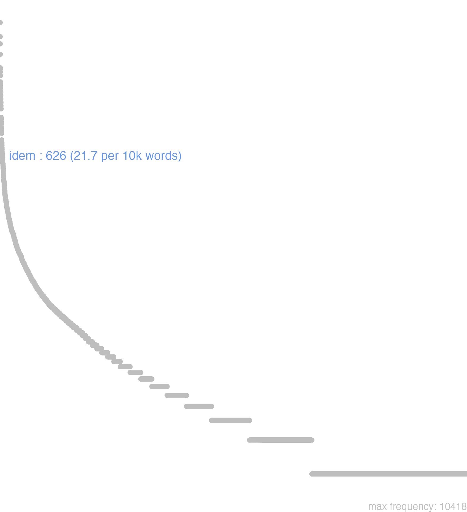

72 idem
72.0.0.1 bases lexicais
id: http://lila-erc.eu/data/id/lemma/109082
classe: determinante
paradigma: pronominal
outras grafias: eidem, eisdim
variantes do lema:
no data
ĕădem
īdem
ĭdem
no data
72.0.0.2 dicionários tradicionais
eūmdem
acus. sing. m. de idem.
īdem eădem, ĭdem
pronome demonstrativo
Obs.: Contam como dissílabo as seguintes formas em alguns poetas: eodem Verg. Buc. 8, 82; eadem Verg. En. 10, 487; eosdem Prop. 4, 7, 7.
acus. sing. m. de idem.
īdem eădem, ĭdem
pronome demonstrativo
Obs.: Contam como dissílabo as seguintes formas em alguns poetas: eodem Verg. Buc. 8, 82; eadem Verg. En. 10, 487; eosdem Prop. 4, 7, 7.
1 I-Sent. próprio Este precisamente;
2 I-daí: O mesmo. a mesma sent. geral Cíc. Of. I, 90.
3 II-Sents. diversos; Também, ao mesmo tempo Cíc. Nat. 3. 80.
4 II-Em correlação com qui, atque. et, ut, quasi, cum em comparações: Do mesmo modo que, o mesmo que Cíc. Tusc. 2.9.
5 II-Neutro sing. com gen.: O mesmo:
[EXEMPLOS]
5
idem juris Cíc. Balb. 29 «o mesmo direito».
2 eădem
nom. sing. f. e pI. n. de idem.
no data
Idem -eadem idem
1 Cic. mesmo, mesma.
Idem et c. eadem
1 o mesmo
no data
72.0.0.3 dados de corpus
![This chart plots collocate by scoreSUBST, for the headword idem here are all the values plotted: collocate: fere; scoreSUBST: 0. collocate: tempus; scoreSUBST: 2. collocate: sentio; scoreSUBST: 0. collocate: in; scoreSUBST: 0. collocate: facio; scoreSUBST: 0. collocate: que; scoreSUBST: 0. collocate: nunc; scoreSUBST: 0. collocate: genus; scoreSUBST: 2. collocate: hic; scoreSUBST: 0. collocate: modus; scoreSUBST: 2. collocate: dux; scoreSUBST: 2. collocate: dies; scoreSUBST: 2. collocate: qui; scoreSUBST: 0. collocate: utor; scoreSUBST: 0. collocate: causa; scoreSUBST: 2. collocate: ille; scoreSUBST: 0. collocate: semper; scoreSUBST: 0. collocate: tamen; scoreSUBST: 0. collocate: sententia; scoreSUBST: 2. collocate: ratio; scoreSUBST: 2. collocate: licet; scoreSUBST: 0. collocate: galli; scoreSUBST: 0. collocate: Scipio; scoreSUBST: 0](./Media/wordcloud__xx105-100-101-109xx__BY_collocate_scoreSUBST.webp)
![This chart plots collocate by scoreADJ, for the headword idem here are all the values plotted: collocate: fere; scoreADJ: 0. collocate: tempus; scoreADJ: 0. collocate: sentio; scoreADJ: 0. collocate: in; scoreADJ: 0. collocate: facio; scoreADJ: 0. collocate: que; scoreADJ: 0. collocate: nunc; scoreADJ: 0. collocate: genus; scoreADJ: 0. collocate: hic; scoreADJ: 0. collocate: modus; scoreADJ: 0. collocate: dux; scoreADJ: 0. collocate: dies; scoreADJ: 0. collocate: qui; scoreADJ: 0. collocate: utor; scoreADJ: 0. collocate: causa; scoreADJ: 0. collocate: ille; scoreADJ: 0. collocate: semper; scoreADJ: 0. collocate: tamen; scoreADJ: 0. collocate: sententia; scoreADJ: 0. collocate: ratio; scoreADJ: 0. collocate: licet; scoreADJ: 0. collocate: galli; scoreADJ: 2. collocate: Scipio; scoreADJ: 0](./Media/wordcloud__xx105-100-101-109xx__BY_collocate_scoreADJ.webp)
![This chart plots collocate by scoreVERBO, for the headword idem here are all the values plotted: collocate: fere; scoreVERBO: 0. collocate: tempus; scoreVERBO: 0. collocate: sentio; scoreVERBO: 2. collocate: in; scoreVERBO: 0. collocate: facio; scoreVERBO: 2. collocate: que; scoreVERBO: 0. collocate: nunc; scoreVERBO: 0. collocate: genus; scoreVERBO: 0. collocate: hic; scoreVERBO: 0. collocate: modus; scoreVERBO: 0. collocate: dux; scoreVERBO: 0. collocate: dies; scoreVERBO: 0. collocate: qui; scoreVERBO: 0. collocate: utor; scoreVERBO: 2. collocate: causa; scoreVERBO: 0. collocate: ille; scoreVERBO: 0. collocate: semper; scoreVERBO: 0. collocate: tamen; scoreVERBO: 0. collocate: sententia; scoreVERBO: 0. collocate: ratio; scoreVERBO: 0. collocate: licet; scoreVERBO: 2. collocate: galli; scoreVERBO: 0. collocate: Scipio; scoreVERBO: 0](./Media/wordcloud__xx105-100-101-109xx__BY_collocate_scoreVERBO.webp)
![This chart plots collocate by scoreADV, for the headword idem here are all the values plotted: collocate: fere; scoreADV: 3. collocate: tempus; scoreADV: 0. collocate: sentio; scoreADV: 0. collocate: in; scoreADV: 0. collocate: facio; scoreADV: 0. collocate: que; scoreADV: 0. collocate: nunc; scoreADV: 2. collocate: genus; scoreADV: 0. collocate: hic; scoreADV: 0. collocate: modus; scoreADV: 0. collocate: dux; scoreADV: 0. collocate: dies; scoreADV: 0. collocate: qui; scoreADV: 0. collocate: utor; scoreADV: 0. collocate: causa; scoreADV: 0. collocate: ille; scoreADV: 0. collocate: semper; scoreADV: 2. collocate: tamen; scoreADV: 1. collocate: sententia; scoreADV: 0. collocate: ratio; scoreADV: 0. collocate: licet; scoreADV: 0. collocate: galli; scoreADV: 0. collocate: Scipio; scoreADV: 0](./Media/wordcloud__xx105-100-101-109xx__BY_collocate_scoreADV.webp)
![This chart plots collocate by scoreFUNC, for the headword idem here are all the values plotted: collocate: fere; scoreFUNC: 0. collocate: tempus; scoreFUNC: 0. collocate: sentio; scoreFUNC: 0. collocate: in; scoreFUNC: 30. collocate: facio; scoreFUNC: 0. collocate: que; scoreFUNC: 0. collocate: nunc; scoreFUNC: 0. collocate: genus; scoreFUNC: 0. collocate: hic; scoreFUNC: 0. collocate: modus; scoreFUNC: 0. collocate: dux; scoreFUNC: 0. collocate: dies; scoreFUNC: 0. collocate: qui; scoreFUNC: 0. collocate: utor; scoreFUNC: 0. collocate: causa; scoreFUNC: 0. collocate: ille; scoreFUNC: 0. collocate: semper; scoreFUNC: 0. collocate: tamen; scoreFUNC: 0. collocate: sententia; scoreFUNC: 0. collocate: ratio; scoreFUNC: 0. collocate: licet; scoreFUNC: 0. collocate: galli; scoreFUNC: 0. collocate: Scipio; scoreFUNC: 0](./Media/wordcloud__xx105-100-101-109xx__BY_collocate_scoreFUNC.webp)
![This charts plots the frequency of lemma by author_Frequencies. The Tacitus subcorpus registers the highest normalized frequency, with the value of 37.76 and an absolute frequency of 11. The Cicero subcorpus follows, with a normalized frequency of 25.98 and an absolute frequency of 417. the subcorpus with the least normalized frequency is Hieronymus with the normalized value of 0 and an absolute freqeuncy of 0. here are all the values: subcorpus: Caesar ; normalized frequency: 68 ; absolute frequency: 25.6816980134451. subcorpus: Cicero ; normalized frequency: 417 ; absolute frequency: 25.9774239366076. subcorpus: Horatius ; normalized frequency: 6 ; absolute frequency: 5.32812361246781. subcorpus: Ovidius ; normalized frequency: 7 ; absolute frequency: 12.0109814687714. subcorpus: Phaedrus ; normalized frequency: 6 ; absolute frequency: 9.10885076666161. subcorpus: Sallustius ; normalized frequency: 18 ; absolute frequency: 16.6960393284482. subcorpus: Seneca ; normalized frequency: 89 ; absolute frequency: 16.6103656146768. subcorpus: Suetonius ; normalized frequency: 2 ; absolute frequency: 22.0507166482911. subcorpus: Tacitus ; normalized frequency: 11 ; absolute frequency: 37.7617576381737. subcorpus: Vergilius ; normalized frequency: 2 ; absolute frequency: 3.86100386100386. subcorpus: Hieronymus ; normalized frequency: 0 ; absolute frequency: 0](./Media/barchart__xx105-100-101-109xx__lemma_BY_author_Frequencies.webp)
![This charts plots the frequency of lemma by genre_Frequencies. The Prosa.oratória subcorpus registers the highest normalized frequency, with the value of 28.42 and an absolute frequency of 296. The Prosa.histórica subcorpus follows, with a normalized frequency of 24.1 and an absolute frequency of 99. the subcorpus with the least normalized frequency is Prosa.ficcional with the normalized value of 0 and an absolute freqeuncy of 0. here are all the values: subcorpus: Prosa.histórica ; normalized frequency: 99 ; absolute frequency: 24.0999050609801. subcorpus: Prosa.filosófica ; normalized frequency: 136 ; absolute frequency: 22.4049027198893. subcorpus: Prosa.oratória ; normalized frequency: 296 ; absolute frequency: 28.4197286684013. subcorpus: Prosa.epistolográfica ; normalized frequency: 69 ; absolute frequency: 18.2834733299769. subcorpus: Poesia.lírica ; normalized frequency: 7 ; absolute frequency: 5.88878606881467. subcorpus: Poesia.didática ; normalized frequency: 12 ; absolute frequency: 10.1789804054627. subcorpus: Poesia.trágica ; normalized frequency: 5 ; absolute frequency: 4.34329395413482. subcorpus: Poesia.épica ; normalized frequency: 2 ; absolute frequency: 3.86100386100386. subcorpus: Prosa.ficcional ; normalized frequency: 0 ; absolute frequency: 0](./Media/barchart__xx105-100-101-109xx__lemma_BY_genre_Frequencies.webp)
![This charts plots the frequency of lemma by period_Frequencies. The II.d.C. subcorpus registers the highest normalized frequency, with the value of 34.03 and an absolute frequency of 13. The I.a.C. subcorpus follows, with a normalized frequency of 23.83 and an absolute frequency of 512. the subcorpus with the least normalized frequency is IV.d.C. with the normalized value of 0 and an absolute freqeuncy of 0. here are all the values: subcorpus: I.a.C. ; normalized frequency: 512 ; absolute frequency: 23.8305794740517. subcorpus: I.d.C. ; normalized frequency: 101 ; absolute frequency: 15.4505124674927. subcorpus: II.d.C. ; normalized frequency: 13 ; absolute frequency: 34.0314136125654. subcorpus: IV.d.C. ; normalized frequency: 0 ; absolute frequency: 0](./Media/barchart__xx105-100-101-109xx__lemma_BY_period_Frequencies.webp)
eodem duce redibant
Cic.Mur.26
E, com ele mesmo de guia, voltavam. [JDD]
isdem in armis fui
Cic.Lig.9
estive nas mesmas armas. [JDD]
licuit eodem modo ut signa
Cic.Ver.2.4.27.3
Te foi permitido do mesmo modo que as estátuas. [JDD]
semper idem uelle atque idem nolle
Sen.Ep.20.5
Querer sempre o mesmo e não querer sempre o mesmo. [JDD]
eodem die ubi luserunt nauigia sorbentur
Sen.Ep.4.7
no mesmo dia em que navios se divertiram, são engolidos. [JDD]
premit te eadem causa quae expulit
Sen.Ep.28.2
Te oprime a mesma causa que te impeliu a sair”. [JDD]
eodem modo dicendum est diuitiae illum tenent
Sen.Ep.119.12
do mesmo modo deve se dizer “a riqueza se apoderou dele”. [JDD]
praesertim cum eosdem in agros etiam deduxerit
Cic.Phil.7.17.2
Sobretudo depois que ele tiver fixado esses mesmos nos campos. [JDD]
Eandem virtutem istam veniet tempus cum graviter gemes
Cic.Att.2.19.3
“Um tempo virá em que gemerás penosamente esse mesmo valor” [JDD]
haec eadem quacumque exercitum duxit fecit M. Antonius
Cic.Phil.3.31.12
Essas mesmas coisas fez Marco Antônio, onde quer que tenha levado seu exército. [JDD, de outra edição]
leguntur eadem ratione ad senatum Allobrogum populumque litterae
Cic.Catil.3.11.1
Do mesmo modo é lida a carta ao senado e ao povo dos alóbroges. [JDD]
est enim is qui est tamquam alter idem
Cic.Amici.80
pois este é como um outro ele mesmo. [JDD]
recitatae sunt tabellae in eandem fere sententiam confessus est
Cic.Catil.3.10.16
As tabuinhas foram lidas quase no mesmo sentido; confessou. [JDD]
refice illum et mitte in senatum eandem sententiam dicet
Sen.Prov.3.9
Reanima-o e manda-o ao senado: dirá a mesma opinião. [JDD]
hos subsecuti equites calonesque eodem impetu militum uirtute seruantur
Caes.Gal.6.40.5
Os criados e os cavaleiros, seguindo-os com o mesmo ímpeto, são salvos pela coragem dos soldados. [JDD, de outra edição]
eadem est feminae marisque natura eadem forma magnitudoque cornuum
Caes.Gal.6.26.3
A natureza da fêmea e do macho é a mesma, e são os mesmos a forma e o tamanho dos chifres. [JDD]
magna uis est magnum numen unum et idem sentientis senatus
Cic.Phil.3.32.9
É uma grande força, um grande poder uma mesma e única opinião do senado. [JDD]
ita fato placuit nullius rei eodem semper loco stare fortunam
Sen.Helv.7.10
Assim agradou ao destino que a sorte de coisa alguma ficasse sempre no mesmo lugar. [JDD]
quod nisi idem in amicitiam transferetur uerus amicus numquam reperietur
Cic.Amici.80
Se isso mesmo não for transferido para a amizade, o verdadeiro amigo nunca será encontrado. [JDD]
in hos eadem omnia sunt iura quae dominis in seruos
Caes.Gal.6.13.2
e sobre eles têm todos os mesmos direitos que os senhores têm sobre seus escravos. [JDD]
nunc eadem illa quaeso audite et diligenter sicut adhuc fecistis attendite
Cic.Ver.2.4.102.13
Agora, ouvi, eu vos peço, esses mesmos fatos e prestai bastante atenção, como fizestes até agora. [JDD]
eodem die legati ab hostibus missi ad Caesarem de pace uenerunt
Caes.Gal.4.36.1
No mesmo dia legados enviados pelos inimigos vieram a César acerca da paz. [JDD]
si me consulis nullo modo sed tamen Ligarium senatus idem legauerat
Cic.Lig.20
Se me consultas, de modo algum; mas, em todo caso, o senado mesmo tinha nomeado Ligário como embaixador. [JDD]
a Tyndaritanis non eiusdem Scipionis beneficio positum simulacrum Mercuri pulcherrime factum sustulisti
Cic.Ver.2.4.84.2
Não tiraste dos tindaritanos uma estátua de Mercúrio, belissimamente feita, erigida por benefício do mesmo Cipião? [JDD]
quo in genere maxime delectarunt duae fere eodem tempore abs te Buthroto datae
Cic.Att.4.16.1
Nesse tipo, me deleitaram principalmente duas entregues por ti quase ao mesmo tempo em Butroto. [JDD]
quaesivit ex eo placeret ne ei iudices a praetore legi quo consilio idem praetor uteretur
Cic.Att.1.14.1
Quis saber dele se lhe agradava que fossem eleitos pelo pretor os juízes de cujo conselho o mesmo pretor se utilizaria. [JDD, de outra edição]
Gallorum eadem atque Belgarum oppugnatio est haec ubi circumiecta multitudine hominum totis moenibus undique in murum lapides iaci coepti sunt murusque defensoribus nudatus est testudine facta portas succendunt murumque subruunt
Caes.Gal.2.6.2
O método de ataque dos belgas, o mesmo dos gauleses, é este: Depois de posta em torno da muralha inteira uma multidão de homens, pedras começaram a ser lançadas de toda parte contra o muro e o muro foi despojado de defensores; formada a tartaruga, incendeiam as portas e derrubam o muro. [JDD]
72.0.0.4 Diagrama de Zipf
